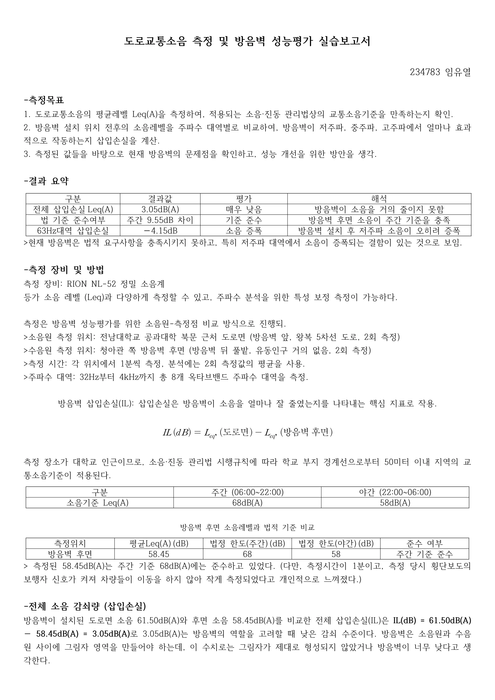

ROAD TRAFFIC NOISE
도로의 소리, 방음벽 너머의 차이
도로변과 방음벽 후면의 소음을 직접 측정하고, 전체 레벨과 주파수별 차이를 비교했습니다. 평균값 하나로 설명되지 않는 현장 소음의 특성을 읽었습니다.
- YEAR / SEMESTER
- 3학년 2학기 · 2025
- COURSE
- 건축음향
- CONTRIBUTION
- 측정·실습 보고서
- SITE / SUBJECT
- 전남대학교 공대 북문·청아관 주변

THE IDEA
생각의 출발점
방음벽이 있는 두 위치에서 소리의 크기가 어떻게 달라지는지 확인했습니다. RION NL-52를 사용해 위치별로 1분씩 두 차례 측정한 뒤, 전체 소음도와 옥타브 대역별 평균을 비교했습니다.
- 01
두 위치를 같은 틀로 비교
도로측과 후면 측정값을 반복 취득해 평균을 구했습니다. 전체 A가중 레벨은 각각 61.50 dBA와 58.45 dBA로, 측정 위치 사이에 3.05 dB의 차이가 나타났습니다.
- 02
주파수에 따라 달라지는 결과
250 Hz에서는 전·후면 차이가 6.20 dB였지만, 63 Hz에서는 후면 값이 더 높았습니다. 저주파의 회절, 주변 배경음과 측정 시점의 영향을 함께 검토했습니다.
- 03
관찰을 개선 방향으로
틈새 보완, 상단 형상과 높이 조정 등의 방안을 정리했습니다. 교통 신호와 차량 구성에 따라 소음이 변하므로 반복·장시간 측정이 필요하다고 보았습니다.
READING THE RESULTS
주요 측정 결과
| 항목 | 도로측 | 후면 | 도로측 − 후면 |
|---|---|---|---|
| 전체 A가중 레벨 | 61.50 dBA | 58.45 dBA | 3.05 dB |
| 63 Hz | 62.45 dB | 66.60 dB | −4.15 dB |
| 250 Hz | 61.95 dB | 55.75 dB | 6.20 dB |
| 1,000 Hz | 58.20 dB | 52.85 dB | 5.35 dB |
보고서의 위치별 반복 측정 평균. 대역별 레벨과 전체 A가중 레벨은 구분해 읽습니다.
PROCESS & OUTCOME
과정과 결과
사진을 누르면 크게 볼 수 있습니다.